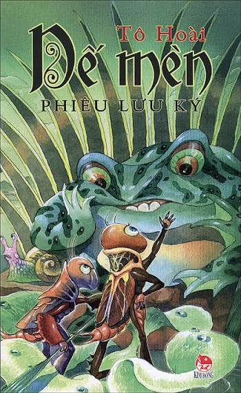
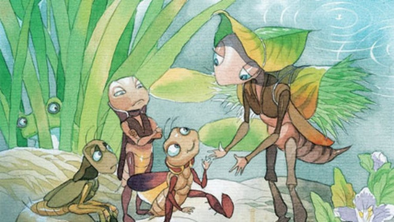

Ngày nào cũng vậy, suốt buổi, tôi chui vào trong cùng hang, hì hục đào đất để khoét một cái ổ lớn, làm thành cái giường ngủ sang trọng. Rồi cũng biết lo xa như các cụ già trong họ dế, tôi đào hang sâu sang hai ngả làm những con đường tắt, những cửa sau, những ngách thượng, phòng khi gặp nguy hiểm, có thể thoát thân ra lối khác được. Chập tối, tôi tạm nghỉ tay và ra đứng ngoài cửa, họp cùng anh chị em hàng xóm quanh bờ ruộng, vừa gảy đàn vừa hát một bài hát hoàng hôn chào tạm biệt ông mặt trời.

Khi đêm đã xuống hẳn, cả xóm chúng tôi, các bô lão dế lụ khụ già cốc đế cũng bỗng nhiên vui tính, ai nấy ra khỏi hang, đến tụ hội thật đông tận giữa bãi trong đêm tối mát lạnh, cùng uống sương đọng, ăn cỏ ướt và những gã tài hoa thì gảy đàn thổi sáo, cùng nhau ca hát, nhảy múa linh đình đến tận sáng bạch, lúc ông mặt trời quen thuộc lại nghiêm trang ló lên đằng đông mới tan cuộc ai về nhà nấy.